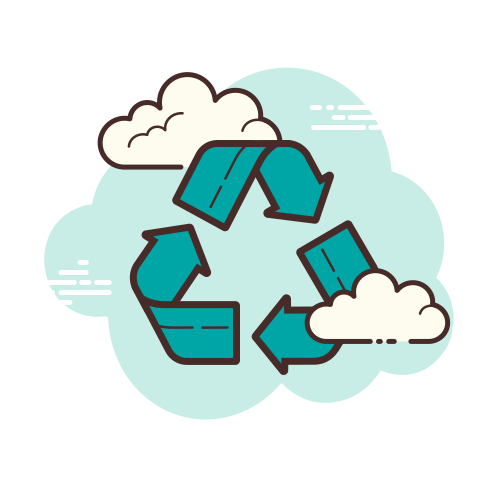

EcoCycle
Recycle Right, every time!
Make a positive impact on our planet today with our easy to use recycling guide. Learn what you can recycle, how to prepare it and where to take it. Get started today and join the EcoCycle movement towards a more sustainable future.
🔍 Show me how
Type of materials & How to recycle them
click on each section to view recycling guidelines
What belongs: Water bottles, milk jugs, detergent containers (PET 1 & HDPE 2).
Preparation: Rinse thoroughly to remove food residue. Keep caps on if they are the same material.
Avoid: Plastic bags, bubble wrap, and soiled food containers.
What belongs: Untreated timber, wooden pallets, and clean scraps.
Preparation: Remove large nails or heavy metal attachments if possible.
Avoid: Painted or chemically treated wood, as these can be toxic when processed.
What belongs: Aluminum soda cans, steel soup cans, and clean foil.
Preparation: Rinse out food. You can crush cans to save space.
Avoid: Paint cans (hazardous) or scrap metal with heavy rust.
What belongs: Fruit peels, vegetable scraps, coffee grounds, and grass clippings.
Preparation: Collect in a compost-friendly bin or biodegradable bag.
Avoid: Meat, dairy, or pet waste which can attract pests and pathogens.
What belongs: Clear, green, and brown bottles and jars.
Preparation: Rinse and remove metal lids (recycle those separately).
Avoid: Window glass, mirrors, or light bulbs (these have different melting points).
Centers Around Me
Find recycling plant near you
Click the button below to view the map
Recycling Quiz
Test your knowledge and become a recycling pro!